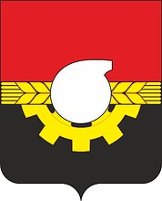
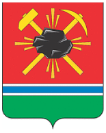

г. Кемерово

- Год основания: 1918, до 1918 — с. Щеглово и д. Кемерово. до 1924 — Щеглов,до 1932 — Щегловск
- Площадь: 294,8 км²
- Население: 556 382 человек
- Кемерово — важный административный, промышленный, транспортный, экономический, научный и культурный центр Сибири. Кемерово — Является центром Кемеровской агломерации.
ГЕРБ ЯЙСКОГО РАЙОНА

Я́я — посёлок городского типа в Кемеровской области.
Посёлок расположен на реке Яя.
ГЕРБ Г. КЕМЕРОВО
Кемерово — Расположен на юге Западной Сибири, на обоих берегах рек Томи и Искитимки, в северной части Кузнецкого угольного бассейна (Кузбасса).
ГЕРБ Г. ЛЕНИНСК - КУЗНЕЦКИЙ

Ленинск-Кузнецкий — находится в западной части Кемеровской области, в центре Кузнецкой котловины, на перекрёстке «семи дорог». Город расположен на реке Ине.